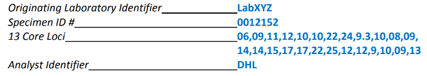

How CODIS maintains privacy
According to Dr. Nada Basit, professor of computer science at UVA, there are six levels of database security*: database, application, operating system, network, physical, and human. At the database level, users are checked for internal read/write/edit privileges, as well as internal rules (checks/assertions/triggers). At the application level, the program which interacts with the database is coded against SQL injections, invalid inputs, and other types of errors. At the operating system level, CODIS is protected against viruses and closed ports on the machines running the application. At the network level, the FBI has installed firewalls and hidden the server to keep foreign IP's from interacting with the CODIS application. At the physical level, the server containing the data is kept within FBI headquarters, and the labs with machines running the application are not publicly accessible. At the human level, there is a high level of vetting that goes into hiring CODIS operators, and people who illegal access the database face up to $250k in fines and a year in jail*
Besides these levels of database security, the information within CODIS is also non-coding "junk" DNA data; that is, it reveals nothing about the individual's phenotype. Below is an example record*, showing only the originating lab, the analyst identifier, the unique numerical sample ID, and the 20 pairs of short tandem repeat (STR) lengths. These are the lengths of known repeated sequences at different locations, loci, in the genome: one of the loci pair inherited from the mother, and the other from the father. All together, they are unique to an individual.
Privacy / Encryption Concerns
Although the DNA data in CODIS is non-coding, there is no way to prove that it may at some point be linked to a particular phenotypic characteristic. And regardless of whether this ever happens, biological data is inherently sensitive and should be protected from malicious actors. Part of what makes CODIS records so useful is their uniqueness and persistence; a sample from a cold case a hundred years ago can still link to a related case, provided the original sample was not subjected to degrading conditions. DNA is immutable; if a citizen's DNA becomes compromised for any reason, they cannot hit the 'reset' button to remedy the issue. DNA remains with a person until the day they die.
In framing the issue of privacy, we assume that all of the database security measures listed above are sufficient in their own right. The focus of our investigation is encryption: "the method by which information is converted into secret code that hides the information's true meaning" *. Given that there is a backlog of samples awaiting CODIS matching analysis*, it would be helpful if there was an efficient way of cross-referencing the larger FBI-held CODIS database with a sample of interest from the lab, using local laboratory computation, but without revealing either parties' information to each other. Motivating this strategy, distributing the computation across local offices will help prevent bottlenecks at the federal level. Also, it is not secure to have thousands of CODIS backups in local law enforcement offices around the US, nor is it ethical to reveal a suspect's sample to the federal government if only local law enforcement has the reason to investigate them.